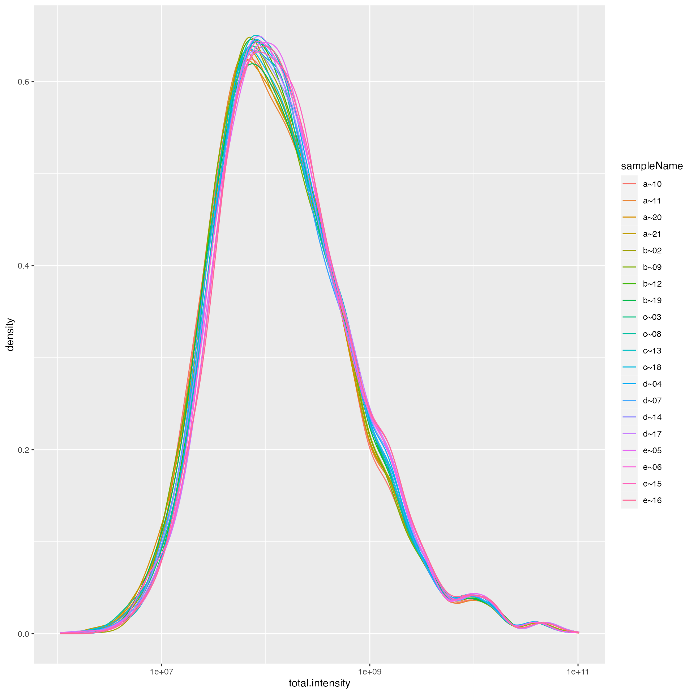
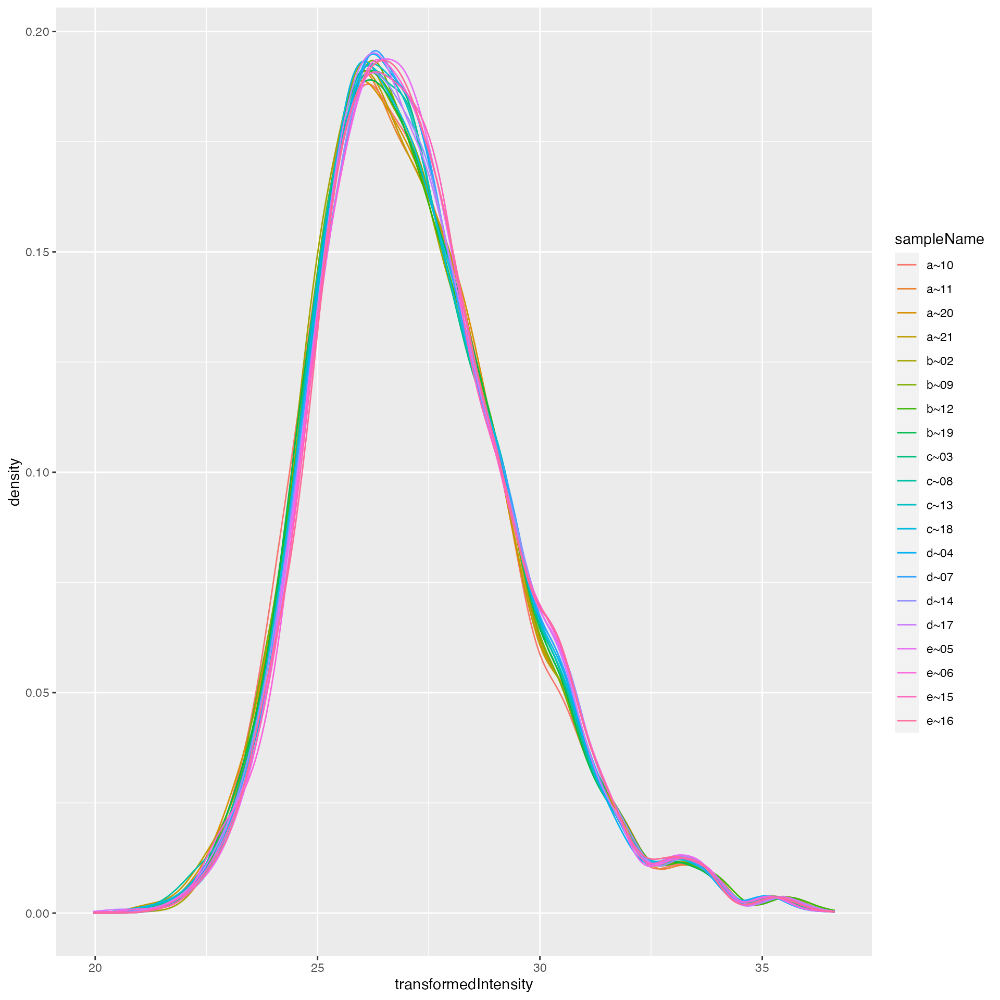
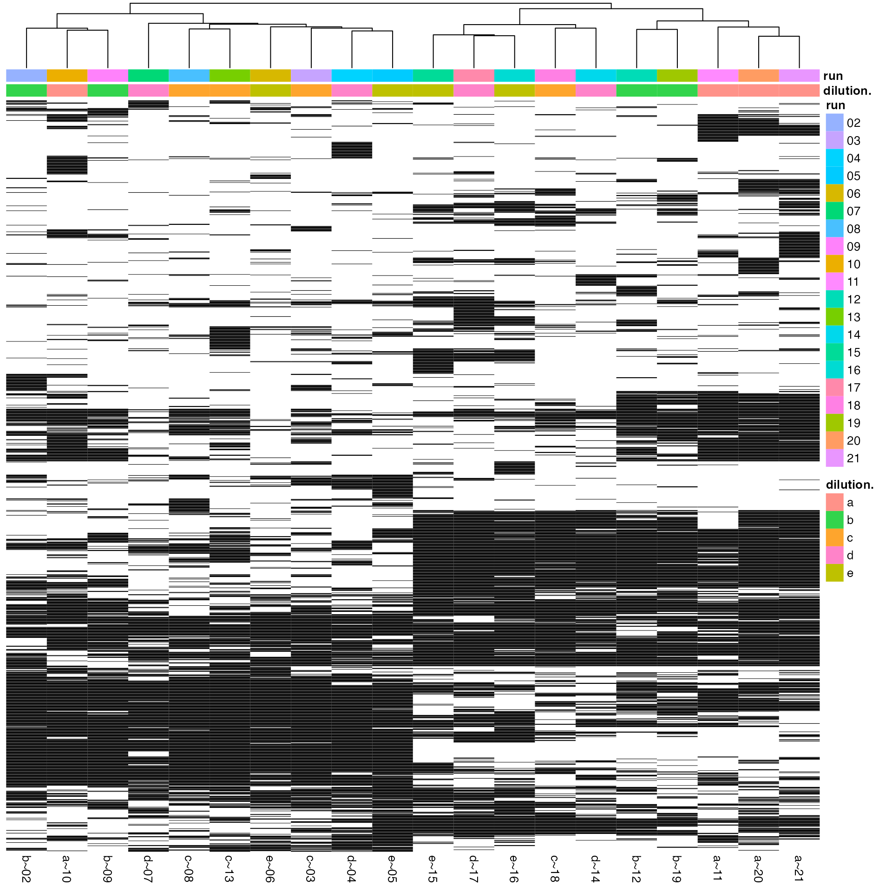
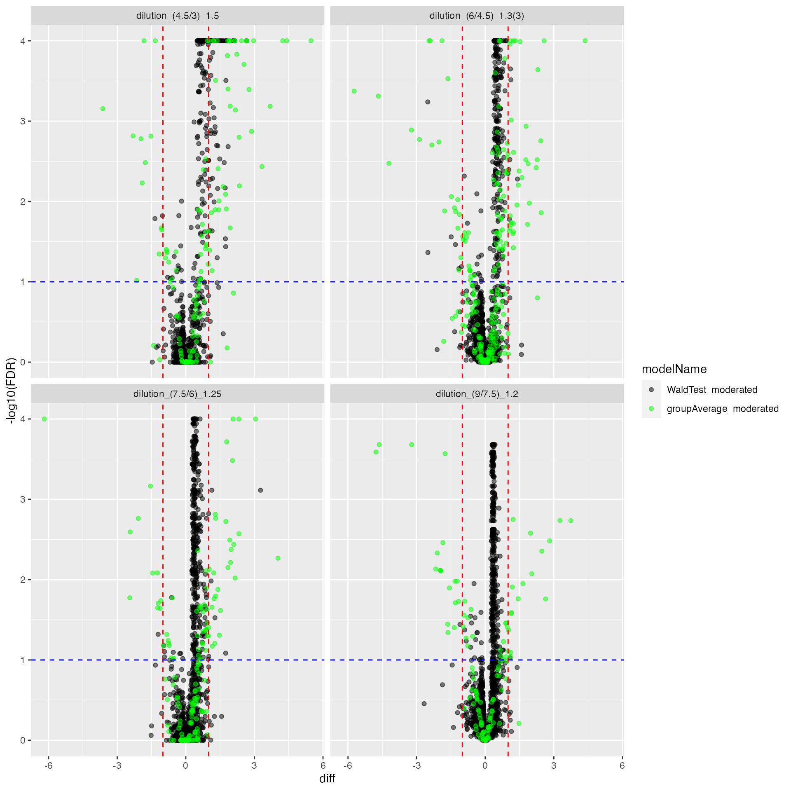
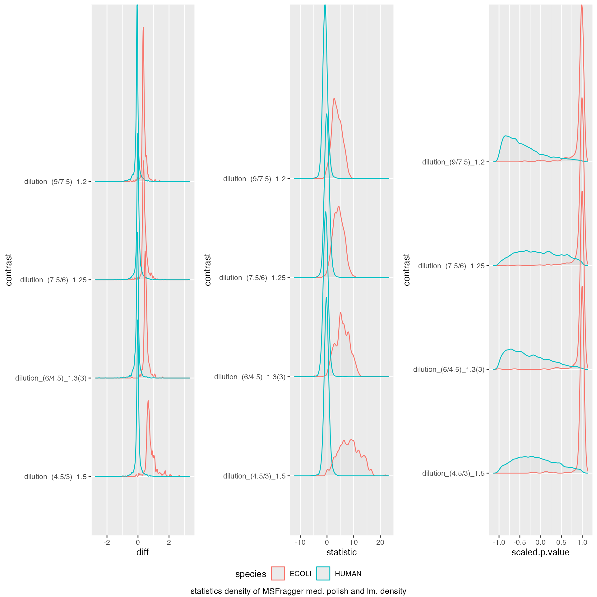
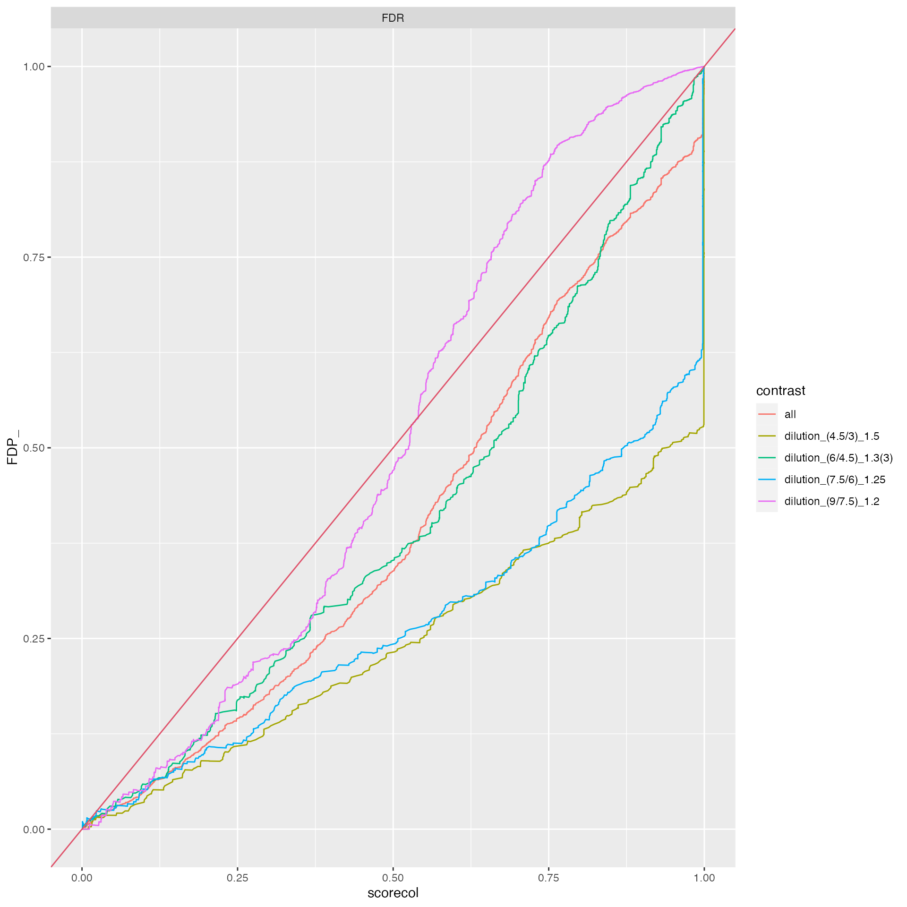

Benchmarking MSFragger output using Ionstar Dataset
FGCZ - (Draft)
09 June, 2022
Source:../vignettes/BenchmarkMSFraggerProteinIonStar.Rmd
BenchmarkMSFraggerProteinIonStar.RmdPlease download and install the prolfquadata package
from github
conflicted::conflict_prefer("filter", "dplyr")Load data
We start by loading the IonStar dataset and the annotation from the
prolfquadata package. The method
add_annotation adds the annotation to the data.
datadir <- file.path(find.package("prolfquadata") , "quantdata")
inputFragfile <- file.path(datadir, "MSFragger_IonStar2018_PXD003881.zip")
inputAnnotation <- file.path(datadir, "annotation_Ionstar2018_PXD003881.xlsx")
annotation <- readxl::read_xlsx(inputAnnotation)
protein <- tibble::as_tibble(read.csv(unz(inputFragfile,"IonstarWithMSFragger/combined_protein.tsv"),
header = TRUE, sep = "\t", stringsAsFactors = FALSE))
#debug( prolfqua::tidy_MSFragger_combined_protein)
protein <- prolfqua::tidy_MSFragger_combined_protein(protein)
protein <- protein |> dplyr::filter(unique.stripped.peptides > 1)
merged <- dplyr::inner_join(annotation, protein)Create prolfqua configuration
atable <- prolfqua::AnalysisTableAnnotation$new()
atable$fileName = "raw.file"
atable$hierarchy[["protein_Id"]] <- c("protein")
atable$hierarchyDepth <- 1
atable$setWorkIntensity("total.intensity")
atable$factors[["dilution."]] = "sample"
atable$factors[["run"]] = "run_ID"
atable$factorDepth <- 1
config <- prolfqua::AnalysisConfiguration$new(atable)
adata <- prolfqua::setup_analysis(merged, config)
lfqdata <- prolfqua::LFQData$new(adata, config)
lfqdata$remove_small_intensities()Normalize data using human proteins
pl <- lfqdata$get_Plotter()
pl$intensity_distribution_density()
subset_h <- lfqdata$get_copy()$get_Transformer()$log2()$lfq
subset_h$data <- subset_h$data |> dplyr::filter(grepl("HUMAN", protein_Id))
tr <- lfqdata$get_Transformer()
lfqdataNormalized <- tr$log2()$robscale_subset(lfqsubset = subset_h)$lfq
pl <- lfqdataNormalized$get_Plotter()
pl$intensity_distribution_density()
hm <- pl$NA_heatmap()
hm
Summarize data
lfqdataNormalized$summarize_hierarchy()## # A tibble: 3,934 × 2
## protein_Id n
## <chr> <int>
## 1 sp|A0AVT1|UBA6_HUMAN 1
## 2 sp|A0FGR8|ESYT2_HUMAN 1
## 3 sp|A0MZ66|SHOT1_HUMAN 1
## 4 sp|A1L0T0|ILVBL_HUMAN 1
## 5 sp|A1X283|SPD2B_HUMAN 1
## 6 sp|A2RRP1|NBAS_HUMAN 1
## 7 sp|A2RTX5|SYTC2_HUMAN 1
## 8 sp|A3KN83|SBNO1_HUMAN 1
## 9 sp|A4D1E9|GTPBA_HUMAN 1
## 10 sp|A5PLL7|TM189_HUMAN 1
## # … with 3,924 more rows
summariz <- lfqdataNormalized$get_Summariser()
summariz$interaction_missing_stats()## $data
## # A tibble: 19,670 × 8
## dilution. protein_Id isotopeLabel nrReplicates nrNAs meanArea medianArea
## <chr> <chr> <chr> <int> <int> <dbl> <dbl>
## 1 a sp|A0AVT1|UBA6… light 4 0 25.7 25.7
## 2 a sp|A0FGR8|ESYT… light 4 0 27.4 27.4
## 3 a sp|A0MZ66|SHOT… light 4 0 26.4 26.4
## 4 a sp|A1L0T0|ILVB… light 4 1 24.7 24.8
## 5 a sp|A1X283|SPD2… light 4 4 NaN NA
## 6 a sp|A2RRP1|NBAS… light 4 2 22.8 22.8
## 7 a sp|A2RTX5|SYTC… light 4 0 27.0 27.0
## 8 a sp|A3KN83|SBNO… light 4 2 23.3 23.3
## 9 a sp|A4D1E9|GTPB… light 4 0 24.9 24.9
## 10 a sp|A5PLL7|TM18… light 4 4 NaN NA
## # … with 19,660 more rows, and 1 more variable: nrMeasured <int>
##
## $summaries
## [1] "nrReplicates" "nrNAs" "nrMeasured" "meanArea" "medianArea"
summariz$missingness_per_condition()## # A tibble: 5 × 8
## # Groups: isotopeLabel, dilution. [5]
## isotopeLabel dilution. nrReplicates `0` `1` `2` `3` `4`
## <chr> <chr> <int> <int> <int> <int> <int> <int>
## 1 light a 4 2900 307 230 233 264
## 2 light b 4 2948 299 309 223 155
## 3 light c 4 2977 315 191 287 164
## 4 light d 4 2969 295 320 231 119
## 5 light e 4 2969 221 337 241 166
summariz$missingness_per_condition_cumsum()## # A tibble: 5 × 8
## # Groups: isotopeLabel, dilution. [5]
## isotopeLabel dilution. nrReplicates `0` `1` `2` `3` `4`
## <chr> <chr> <int> <int> <int> <int> <int> <int>
## 1 light a 4 2900 3207 3437 3670 3934
## 2 light b 4 2948 3247 3556 3779 3934
## 3 light c 4 2977 3292 3483 3770 3934
## 4 light d 4 2969 3264 3584 3815 3934
## 5 light e 4 2969 3190 3527 3768 3934
summariz$hierarchy_counts_sample()## # A tibble: 20 × 3
## # Groups: isotopeLabel [1]
## isotopeLabel sampleName protein_Id
## <chr> <chr> <int>
## 1 light a~10 3321
## 2 light a~11 3376
## 3 light a~20 3275
## 4 light a~21 3242
## 5 light b~02 3379
## 6 light b~09 3422
## 7 light b~12 3356
## 8 light b~19 3373
## 9 light c~03 3371
## 10 light c~08 3415
## 11 light c~13 3324
## 12 light c~18 3412
## 13 light d~04 3378
## 14 light d~07 3491
## 15 light d~14 3456
## 16 light d~17 3307
## 17 light e~05 3370
## 18 light e~06 3449
## 19 light e~15 3327
## 20 light e~16 3308Model data and specify contrasts
Contrasts <- c(
"dilution_(9/7.5)_1.2" = "dilution.e - dilution.d",
"dilution_(7.5/6)_1.25" = "dilution.d - dilution.c",
"dilution_(6/4.5)_1.3(3)" = "dilution.c - dilution.b",
"dilution_(4.5/3)_1.5" = "dilution.b - dilution.a"
)
lmmodel <- "~ dilution."
lmmodel <- paste0(lfqdataNormalized$config$table$getWorkIntensity() , lmmodel)
modelFunction <- prolfqua::strategy_lm( lmmodel, model_name = "Model")
mod <- prolfqua::build_model(lfqdataNormalized$data, modelFunction)
contr <- prolfqua::ContrastsModerated$new(prolfqua::Contrasts$new(mod, Contrasts))
contrdf <- contr$get_contrasts()
cp <- contr$get_Plotter()
cp$volcano()## $FDR
Benchmark data
ttd <- prolfqua::ionstar_bench_preprocess(contrdf)
medpol_benchmark <- prolfqua::make_benchmark(ttd$data,
model_description = "MSFragger med. polish and lm. density",
model_name = "MSFragger_prot_med_lm",
FDRvsFDP = list(list(score = "FDR", desc = FALSE))
)
saveRDS(medpol_benchmark, "../inst/Benchresults/MSFragger_medpol_benchmark.RDS")
prolfqua::table_facade(medpol_benchmark$smc$summary, "Nr of estimated contrasts")| nr_missing | protein_Id |
|---|---|
| 0 | 3446 |
| 1 | 44 |
| 2 | 184 |
| 3 | 97 |
| 4 | 145 |
medpol_benchmark$plot_score_distribution()
medpol_benchmark$plot_ROC(0.05)
medpol_benchmark$plot_FDRvsFDP()